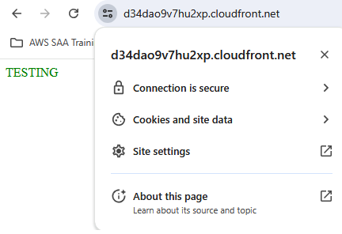
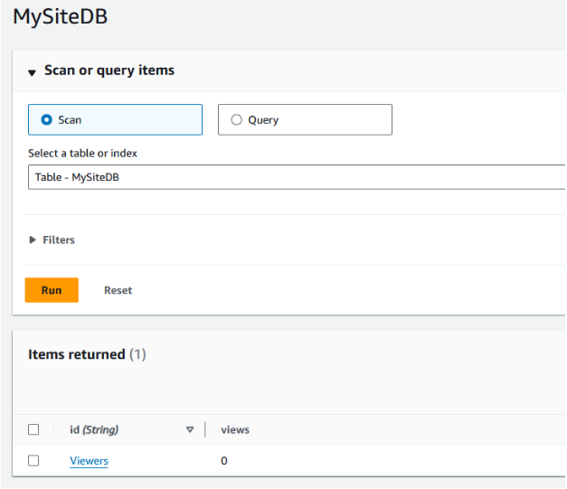

About this site:
Creating a serverless website
Utilizing AWS serverless services to create a personal website.

After completing Adrian Cantrill’s AWS Solutions Architect Associate course and passing my AWS SAA certification test, I wanted to pursue a personal project utilizing a wide range of AWS services. Having already demonstrated I had the knowledge to pass the AWS SAA certification test, I now wanted to show that I had the practical skills needed to work as a cloud engineer. I decided to create a personal website following the Cloud Resume Challenge as a loose guide. The goal was to make a fully serverless website with a visitor counter. From there, I could easily add in more features to utilize more AWS services.
S3 Static Website Hosting
Since I was mostly wanting to gain practice using AWS, I decided to start with creating the backend for my website. I made a basic HTML/CSS page that contained one word colored green to serve as a basic test. I decided to use an AWS account I had already created for testing other services. This way I could skip the steps of creating a new account, setting up billing notifications, creating the IAM admin user, and all the other basic steps that come with creating a new account. Next came creating the S3 bucket that would host my website. I created a standard bucket and made sure to turn off the block public access settings (I had already turned this setting off at the account level). I enabled static website hosting and uploaded my basic HTML and CSS files. The last piece needed was the bucket policy that would allow all principles to perform GetObject actions on all objects in the bucket. I used the below bucket policy to achieve this.
{
"Version": "2012-10-17",
"Statement": [
{
"Sid": "PublicRead",
"Effect": "Allow",
"Principal": "*",
"Action": "s3:GetObject",
"Resource": "arn:aws:s3:::mysite123123231/*"
}
]
}
All that was left to do was to test the site! I browsed to the bucket website endpoint and my simple one word website displayed successfully.
Enabling HTTPS through CloudFront
Now that my site was successfully hosted on an S3 bucket, the next step was to enable HTTPs through the use of CloudFront. I created a CloudFront distribution and set the viewer policy to only use HTTPS. To make sure a user could not just connect directly to the S3 bucket’s website endpoint, I created an OAC and made the appropriate changes to the bucket’s resource policy so that it could only be accessed by the CloudFront distribution.
{
"Version": "2008-10-17",
"Id": "PolicyForCloudFrontPrivateContent",
"Statement": [
{
"Sid": "AllowCloudFrontServicePrincipal",
"Effect": "Allow",
"Principal": {
"Service": "cloudfront.amazonaws.com"
},
"Action": "s3:GetObject",
"Resource": "arn:aws:s3:::mysite123123231/*",
"Condition": {
"StringEquals": {
"AWS:SourceArn": "arn:aws:cloudfront::975050300082:distribution/E2A9ITT8KAU51F"
}
}
}
]
}
Browsing to the S3 bucket’s website endpoint gave me an expected access denied and confirmed that the site could now only be accessed by going through my new CloudFront distribution. I navigated to the provided CloudFront DNS name and was successfully able to access my site. I confirmed that HTTPS was being used before moving on to the next step.

Creating a Custom Domain with Route53
In order to have a practical website, I needed to buy a custom domain name for users to navigate to. It would be impractical to use the domain name provided by my CloudFront distribution since it is long and not easy to remember. Luckily, Route53 in AWS makes it easy to register and host a new domain name. The first step was to register my domain name "zach-bishop.net" within Route53. I followed the steps within the UI to select and pay for my domain. Once registration was complete, I needed to make sure that users browsing to the domain name were directed to my CloudFront distribution. This was done by creating a hosted zone within Route53 and an A alias record to point the domain to the CloudFront distribution. However, when I went to create the record, the distribution was not showiung up as an option. I realized this was because I needed to set the alternate domain name on the distribution to "zach-bishop.net". To do this, I needed to prove ownership of the domain by creating a certificate in ACM. Part of the certificate creation in ACM had me creating a record in R53 to verify my ownership of the domain name. Once that was done, I finished creating the A alias record to direct all traffic to my CloudFront distribution. I tested my new domain by searching "zach-bishop.net" in my browser and confirmed that my website was served.
Creating JavaScript for the Viewer Count (and finding an issue with CloudFront)
It was now time to add the viewer counter. Before using API Gateway, Lambda, and DynamoDB which would comprise the ultimate solution, I created a simple JavaScript file to change the value of a new HTML element that held the number 0. The code executed upon the page loading and simply retrieved the value from the HTML element, increased it by one, and then changed the HTML element to the new value. Of course, this does not work as an effective counter since every time the page is refreshed, it resets the counter to 0 before incrementing it. However, it did serve as a good proof of concept and revealed a tiny flaw in my CloudFront distribution.
Upon uploading the new HTML and JavaScript files to my S3 bucket, I noticed the new HTML element was not displaying on the website. I quickly figured out this was due to CloudFront caching the HTML file and the TTL for the default behavior’s cache policy being set to 24 hours. This was easy to fix and could be done in one of two ways. The first option would be to send an invalidation to the distribution for the HTML file which would cause it to be retrieved from the origin. However, I did not want to do this every time I updated something. So I decided to go with option two and created a new cache policy with the TTL set to 5 minutes. After switching to the new cache policy on the default behavior and waiting a few minuntes, my site was still not updating. My guess is that it was still using the 24 hour TTL and once that expired it would then start to use the new 5 minute TTL. I sent an invalidation and after that my site successfully updated to display the new HTML element. The JavaScript also showed it was working successfully as the HTML element was displaying a one instead of a zero. As a final test, I made another small change to my HTML file and uploaded it to S3. After about 5 minutes, my website updated confirming that my distribution was now using the new 5 minute TTL.
Using DynamoDB for Persistent Data Storage
To solve the issue of my viewer counter resetting to 0 with every page reload, I needed to store the current value in a persistent data store. I decided to use DynamoDB since it is well suited to this task. This was a quick and easy process and just involved creating a DyanmoDB table and an item within that table to store the view count. I used on-demand provisioning for the table so I didn’t have to worry about setting any kind of provisioning capacity myself. I created the item with an attribute called views which would hold the count for the number of viewers of my website.

Setting up the intermediaries with API Gateway and Lambda
Now that I had all my basic components, it was time to connect them together. I would be using JavaScript to collect the current viewer count from the DynamoDB table, but I didn’t want it to be interacting directly with the database. A better way is to use an API Gateway in conjunction with a Lambda function. That way the JavaScript code can just make a GET request to the API Gateway which will then invoke the Lambda function to perform whatever computation and database interaction is needed.
The first step was creating the API Gateway as well as a resource to hold the needed methods. I used a REST API Gateway for this. Once that was completed, I created the lambda function which would be retrieving the view count from my DynamoDB table, increasing it by one, and storing the new value in the table as well as returning it in the response. I wrote the below code to accomplish all of those tasks. I could have split this into two Lambda functions, one to increase the value and one to return the value. These would then use a POST and GET request respectively. However, I decided that would be something I could add as an improvement later.
import json
import boto3
dynamodb = boto3.resource('dynamodb')
table = dynamodb.Table('MySiteDB')
def lambda_handler(event, context):
response = table.get_item(Key={'id':'Viewers'})
newViews = response['Item']['views'] + 1
table.put_item(Item={'id':'Viewers', 'views':newViews})
print(newViews)
return newViews
I ran my newly written code as a test and immediately hit an issue. The Lambda function did not have the proper permissions to interact with the DynamoDB table. This was simply fixed by adding the correct permissions to the policy used by the Lambda function’s execution role. With that fixed I ran another test and confirmed the function successfully retrieved the count value from the DynamoDB table, increased it by one, and printed it to the console. Looking at the DynamoDB table also showed that the new value was successfully written. All that was left to do was create the GET method under my API Gateway resource, run a quick test on the API, and then deploy it to a new production stage.
Final Touches
With my API Gateway and Lambda function fully set up, I just needed to tweak my JavaScript code to send a request to the API Gateway and update the HTML with the response. Sending the GET request was easily accomplished by using the fetch function. However, when looking at my browser console I saw I immediately received an error due to CORS being disabled. This was quickly resolved by enabling CORS on my API Gateway. The next difficulty came from getting the count value from the response. After struggling for awhile, I came up with the solution of turning my JavaScript function into an asynchronous function and using the await keyword when calling the fetch function. This allowed me to get the full response and extract the needed value. Now everytime I refreshed my webpage, my viewer count increased!
All that was left to do was create the front-end website. Since I am not using this to practice my web development skills, I found a website template from https://html5up.net/ that I liked. I then added my content, made a few tweaks to the style to suit my needs, and finally had a fully working serverless website with the foundation needed to add any features I would like!
Takeaways
This project served as a great way to convert my knowledge to a practical and real-world use. I was pleased to find that I was able to accomplish everything needed to complete this project within AWS without any assistance! I ran into a few hiccups along the way, but nothing that I didn’t know how to immediately solve. In it’s entirety the whole process took about a day and a half and no more than a handful of actual working hours. I have several ideas of features to add that will allow me to use more AWS services such as SNS and CloudWatch Logs. I will write new posts about those as I add them.